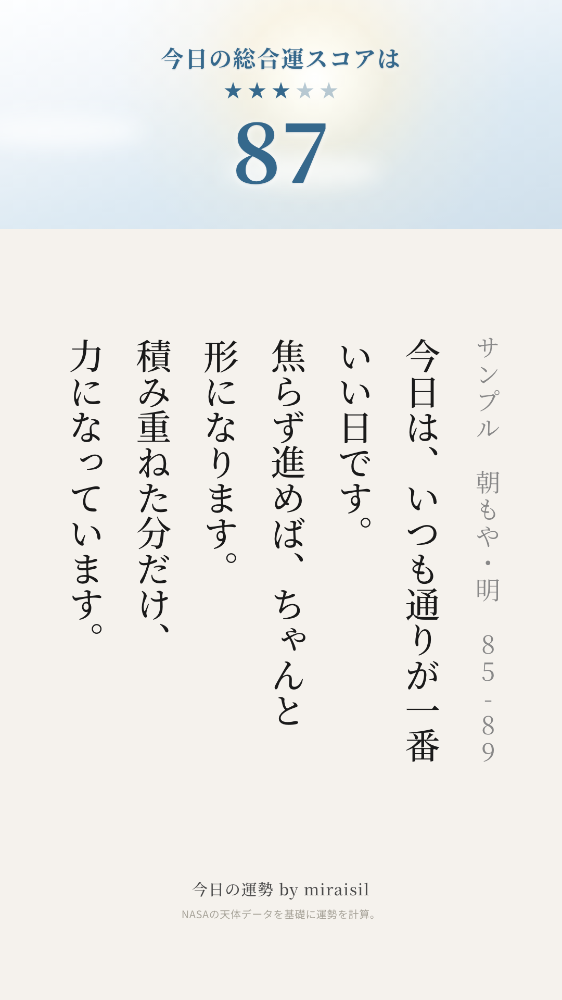
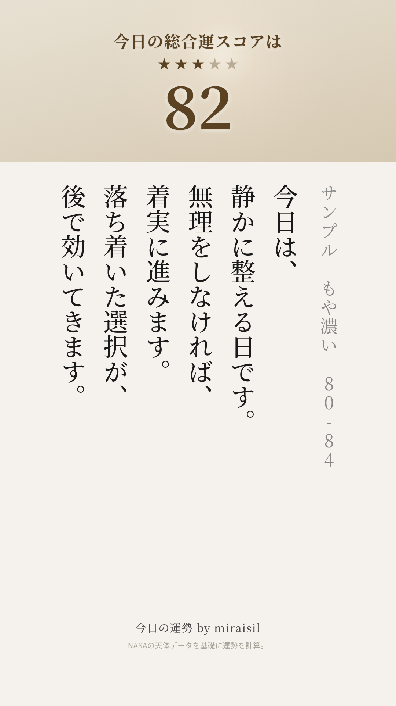
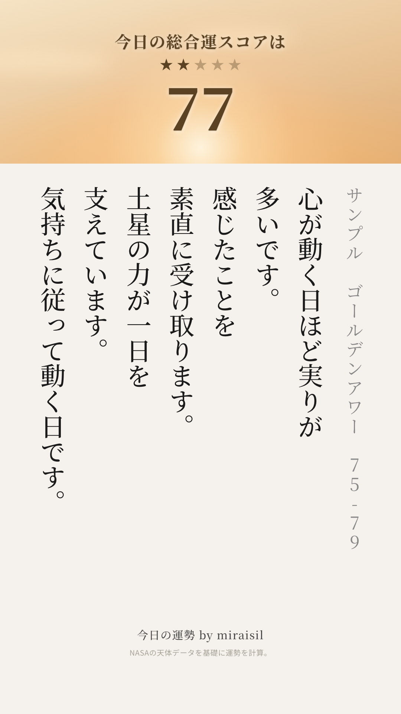
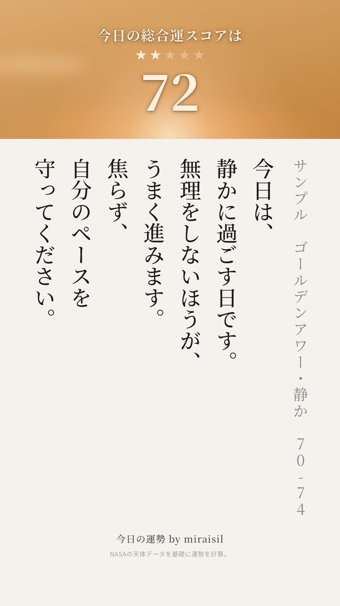
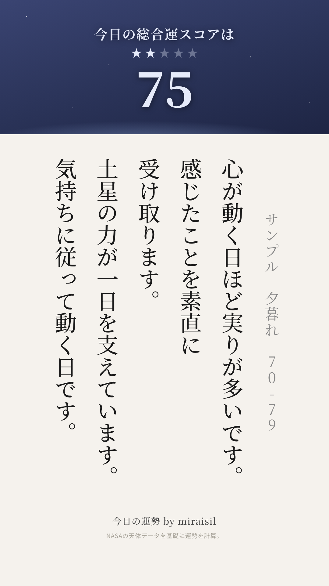
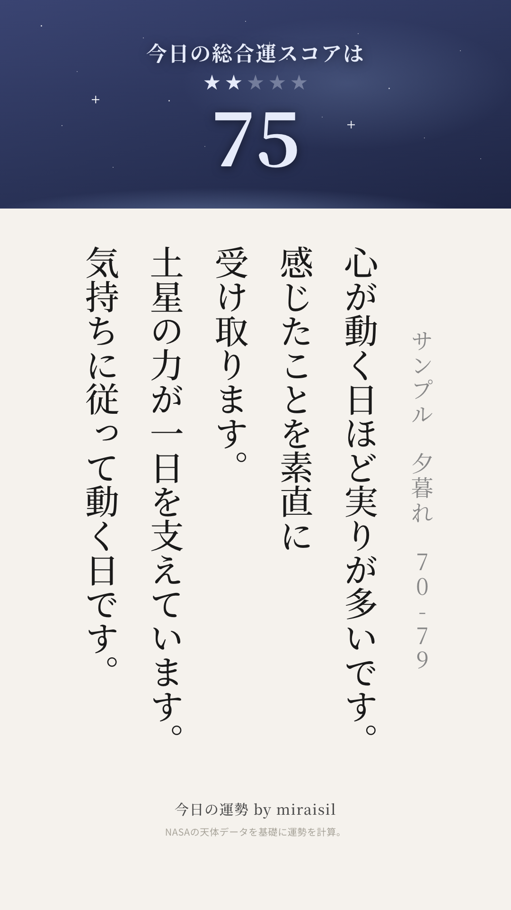
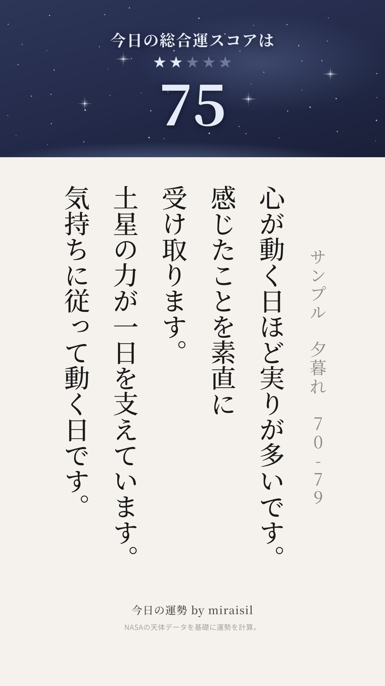

SCORE BAND COLOR · 確定版への差し戻し確認（訂正版） · Internal Only
前回の差し戻しは対象が1つ手前のコミットで、不十分でした。
探索の結果、ご指摘の「7段階・スコア固定・2026-07更新」版は miraisil-web 側のコミット
4715b44（2026-07-16 15:25:22）で公開されていたページと完全に一致すること
が分かりました。タイトルも同じ「帯サンプル（7段階・スコア固定・2026-07更新）」です。
ただし重要な点として、このバージョンに対応する dataunsei-automation 側のソースコードは
一度もコミットされていません（全コミット・reflog・danglingコミットを
確認済み、該当なし）。4715b44 の直前 dff63a2（同日14:32・
「夕暮れ」への差し戻し）から、直後に本日の一連の変更が始まるまでの間、コードは
作業ツリー上の未コミット状態のまま存在し、そのまま失われていました。
そのため、miraisil-webに残っていた確定版のPNG（band_97/92/87/82/77/72/67.png）と、
同じコミットのindex.htmlに書かれていた仕様メモを突き合わせて、コードを再構築しました。
比較の結果: 90-94 / 85-89 / 80-84 / 75-79 / 70-74 の5段は、直前に差し戻していた
a499c89（2026-07-16 01:14）の実装と見比べてもほぼ同一
でした（並べて目視確認済み）。実際に変更が必要だったのは以下の2段のみです。
・95-100: 光芒（線状の光条）が視認できるレベルで残っていたため、
不透明度を大幅に下げて「光芒をほぼ消し、面の白熱だけで灼熱感を出す」仕様に合わせた。
・65-69: 星の数が仕様メモの「15個」に対して現状71個
（小さな点62＋光条つきの明るい星9）だったため、15個（点10＋明るい星5）に絞った。
天の川（ネビュラ）は元々使っていなかったため変更なし。
確定版：7段階（帯サンプル・スコア固定・2026-07更新）
「快晴/青空/朝もや/夕暮れ/夜」と空の明るさでスコアの高低を表現する設計。
区切りは 95-100/90-94/85-89/80-84/75-79/70-74/65-69 の7段階。
95-100は面で焼く中心光＋レンズフレア＋金のきらめき5箇所（光芒はほぼ消す）。
90-94は同じ構図で光を弱めた版。85-89は朝もや（もやの向こうに滲む太陽＋霞2本）。
80-84は85-89よりもやを濃く太陽の輪郭をさらにぼかした版。75-79は夕暮れ（地平から差す
暖色の光＋朝焼け色の雲、星は使わない）。70-74は暖色帯を地平ぎりぎりまで沈め、上部の
藍を濃くした版。65-69は本物の星（15個、box-shadowによる光条つき）が浮かぶ夜空、
天の川は使わない。
 97点 快晴 95-100 ★5
97点 快晴 95-100 ★5
（光芒を大幅に減らして再構築）
 92点 青空 90-94 ★4
92点 青空 90-94 ★4

87点 朝もや・明 85-89 ★3

82点 朝もや・濃 80-84 ★3

77点 夕暮れ・明 75-79 ★2

72点 夕暮れ・濃 70-74 ★2
 67点 夜 65-69 ★1
67点 夜 65-69 ★1
（星を15個に再構築）
97の光芒がほぼ消えて面の白熱だけになっているか、67の星が15個程度に絞られているか、
その他5段が以前と変わっていないかを確認してください。
このコードはまだ dataunsei-automation にコミットしていません。ご確認後、OKであれば
コミットします。
67(夜・65-69)差し替え候補：「明るくなった宇宙」案
確定版（4715b44）の直前、2026-07-15の履歴に「70-79を65-69の"明るくなった宇宙"版として
再設計」という開発ラインがあり、翌7/16 14:32のコミットで「夕暮れ」案に差し戻されて
現在の確定版に繋がっています。この"明るくなった宇宙"ラインには3段階の推移があり、
どれが「ひとつ前」の決定版か一意に決められなかったため、3案とも並べます。
（対応するdataunsei-automation側ソースは未コミットのため、いずれもmiraisil-webに
残っていたPNGそのものです。実際に65-69へ適用する際は、選ばれた案を見ながらコードを
再構築します。）

候補A（2026-07-15 17:13）
星ごく少なめ・最も暗い

候補B（2026-07-15 17:26）
「+」型の光条星を追加

候補C（2026-07-15 17:47・このラインの最終形）
box-shadow星を密に、背景も明るく
候補Cが「明るくなった宇宙」ラインの最後の調整（"brighten 70-79 bg"）で、最も明るく
仕上がっています。どの案を67(夜・65-69)に適用するか選んでください。
差し替え結果：67(夜・65-69) ← 候補C（星雲なし）
候補Cを選択、ただし星雲（ネビュラ・柔らかい光の雲）は除去のご指示。候補Cの画像には
星の周りに柔らかい光の滲みが見えていたため、これを排除し、背景は候補Cと同じ明るい藍の
グラデーション、星はcrisp（にじみのない点）な15個のみ（小さな点10＋光条つきの明るい
星5、67の元のデザインから流用）で再構築しました。
97〜72の他6段はまったく変更していません。
67点 夜 65-69 ★1
候補Cベース・星雲除去・さらに明るく調整
さらに明るくのご指示を受け、背景の藍を一段明るく（輝度を約12ポイント引き上げ）
調整しました。星雲は引き続き無し、星は15個のまま。
このコードはまだ dataunsei-automation にコミットしていません。